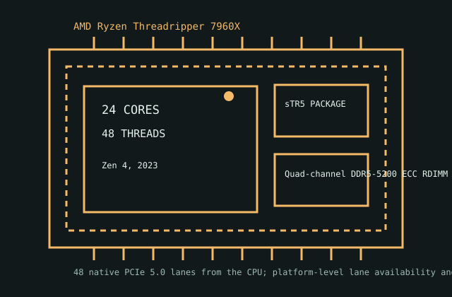

[ IDENTIFIED HEDT / WORKSTATION CPU ]
AMD Ryzen Threadripper 7960X
7000 Series Ryzen Threadripper (Zen 4, 2023); 24 cores / 48 threads; sTR5; 350 W TDP. Static specification and platform compatibility record.

MODEL IDENTIFICATION: AMD Ryzen Threadripper 7960X. Verify the full marking, suffix, OPN, stepping and OEM status against the physical processor and current board documentation before installation.
Recorded specifications
| Model | AMD Ryzen Threadripper 7960X |
|---|---|
| Generation / microarchitecture | 7000 Series Ryzen Threadripper (Zen 4, 2023) |
| Cores / threads | 24 cores / 48 threads |
| Base / max boost | 4.2 GHz base / 5.3 GHz max boost |
| Combined cache | 152 MB combined L2 + L3 |
| Socket / package | sTR5 |
| Default TDP | 350 W |
| Memory | Quad-channel DDR5-5200 ECC RDIMM; validate DIMM capacity, population and speed against the TRX50 board QVL. |
| PCI Express | 48 native PCIe 5.0 lanes from the CPU; platform-level lane availability and bifurcation depend on TRX50 board wiring. |
| Platform compatibility | TRX50 motherboard and BIOS with Ryzen Threadripper 7000 support. Requires the sTR5/RDIMM workstation platform; not compatible with TRX40/sTRX4 or WRX90/sWRX8. |
Compatibility and operating notes
- Generation / microarchitecture: 7000 Series Ryzen Threadripper (Zen 4, 2023)
- Cores / threads: 24 cores / 48 threads
- Base / max boost: 4.2 GHz base / 5.3 GHz max boost
- Combined cache: 152 MB combined L2 + L3
- Socket / package: sTR5
- Default TDP: 350 W
- Memory: Quad-channel DDR5-5200 ECC RDIMM; validate DIMM capacity, population and speed against the TRX50 board QVL.
- PCI Express: 48 native PCIe 5.0 lanes from the CPU; platform-level lane availability and bifurcation depend on TRX50 board wiring.
- Platform compatibility: TRX50 motherboard and BIOS with Ryzen Threadripper 7000 support. Requires the sTR5/RDIMM workstation platform; not compatible with TRX40/sTRX4 or WRX90/sWRX8.
- Socket names alone do not establish compatibility. Check exact motherboard model/revision, CPU support list, minimum BIOS, power delivery, cooling, memory QVL, firmware policy and OEM restrictions.
- Published maxima are platform- and configuration-dependent; confirm the applicable manufacturer documentation before building or servicing a system.
Service and archival notes
Record the physical CPU marking, OPN and stepping; host motherboard and revision; firmware; populated DIMMs; cooling; and test conditions. Treat measured behavior as distinct from the published specification.
Do not apply package torque, voltage, memory population or cooler guidance from another Threadripper generation or socket.
AMD manufacturer sources
- AMD product information — AMD Ryzen Threadripper 7960XAMD product-family page for model identification and published specifications; confirm the full SKU and source revision.
- AMD processor specifications databaseManufacturer specification lookup; search the exact model suffix and compare the archived limits.
- AMD TRX50 platform information — platform cross-checkAMD chipset/platform reference for board-generation context; the motherboard vendor CPU support list remains authoritative for BIOS and board-specific fit.